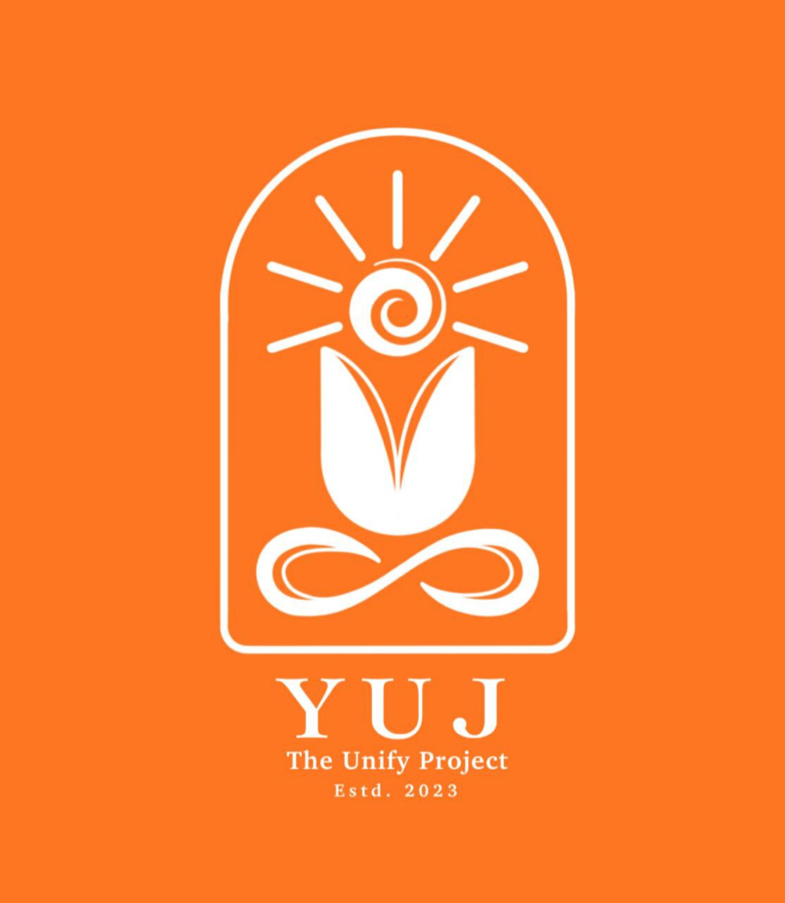

The Unify Project
Integrating Yogic wisdom with modern life
YUJ is the integration of knowledge, wisdom, and practice that leads individuals and communities toward conscious living.
A community dedicated to Yogic Psychology and Conscious Living, YUJ creates a space where ancient insights meet modern understanding, guiding individuals toward balance, awareness, and inner transformation.
YUJ stands on the integration of ancient wisdom and modern understanding, guiding individuals toward conscious and balanced living.
Ancient yogic practices that harmonize body, breath, and mind, creating balance and awareness in daily life.
Practices that cultivate inner stillness, clarity, and deeper connection with one’s own consciousness.
Understanding the nature of the mind through yogic philosophy and integrating it with modern psychological insights.
Applying awareness in everyday life through mindful actions, ethical choices, and inner discipline.